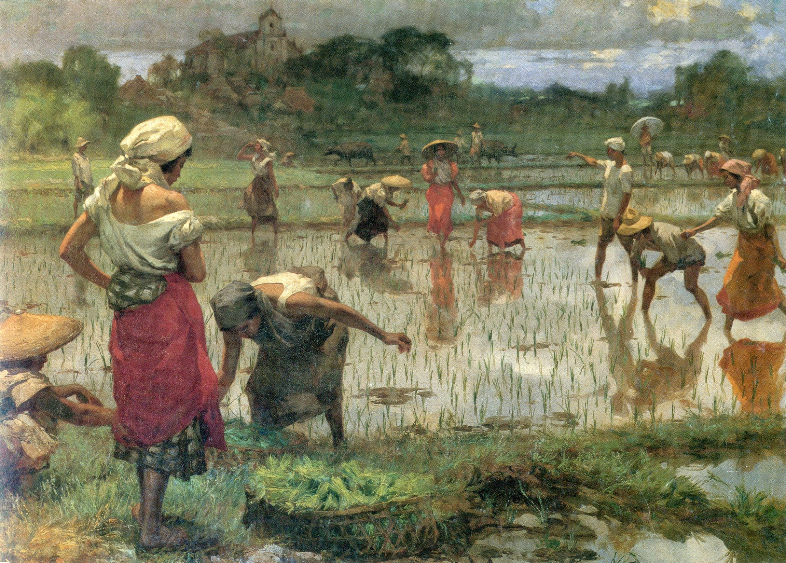

Spoliarium

Juan Luna y Novicio | Spoliarium | 1884 | Oil on canvas
Juan Luna’s oil on canvas painting Spoliarium offers a glimpse into Roman history and the gruesome consequences of gladiator battles. The painting focuses on the harsh realities behind these brutal matches.
Trivia: The term "Spoliarium" is a Latin word referring to the location in the Roman Colosseum where the bodies of slain gladiators were discarded.
La Bulaqueña

Juan Luna y Novicio | La Bulaqueña | 1895 | Oil on canvas
La Bulaqueña by Luna is a renowned example of Philippine portraiture from the turn of the century. The painting features a beautiful Filipina from an elite provincial family, shown in full figure and dressed in the formal attire of that era.
Trivia: The woman in the painting is Emiliana Yriarte Trinidad. She was less than 17 years old when she posed for it. Luna began the painting in November 1895 and completed it in the early months of 1896.
Planting Rice

Fernando Amorsolo | Planting Rice | 1921 | Oil on canvas
This 1921 oil painting by Fernando Amorsolo is the earliest known version of a series titled "Planting Rice," created between 1921 and 1944. Amorsolo's highly sensualized depictions of women farmers shift the narrative from a simple portrayal of agrarian economic production to a more nuanced association of agriculture with female fertility and reproductive sexuality.
Trivia: Amorsolo’s "Planting Rice" is a reinterpretation of Fabian de la Rosa’s 1904 award-winning piece from the Saint Louis World’s Exposition, but it is set in a more suburban environment.
The Assassination of Governor Bustamante

Félix Resurrección Hidalgo | El asesinato del Gobernador Bustamante (The Assassination of Governor Bustamante) | Circa 1904 | Oil on canvas
This work by Hidalgo depicts a historical event: the assassination of Governor-General Fernando Bustamante y Bustillo in 1719 by a mob led by friars whose economic interests were threatened by his policies. The scene is set in the old Palacio del Gobernador in Intramuros.
Trivia: The painting was commissioned by Don Antonio Ma. Regidor (1845-1910), a nationalist known for his opposition to the ministers. However, Regidor was unable to take the painting, which remained with Hidalgo in Barcelona until 1914.